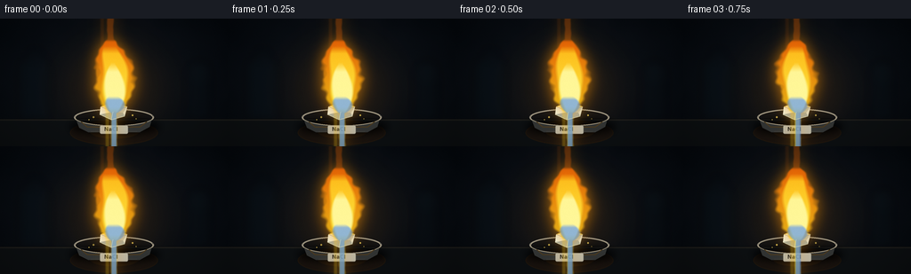
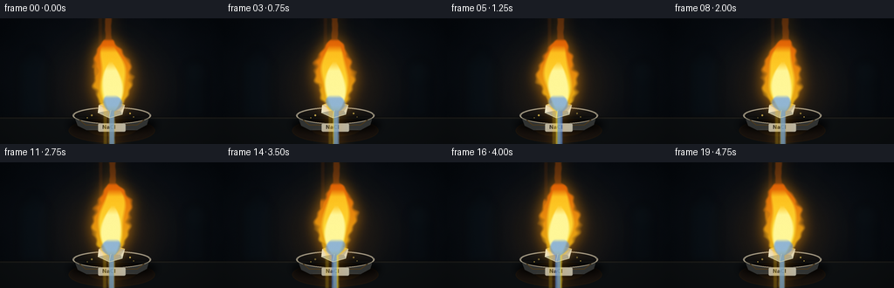
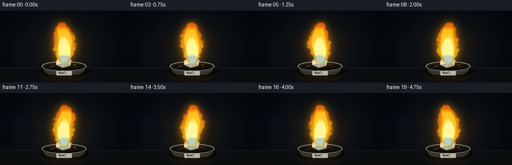

CODING AGENTS AS PIXEL WORLD MODELS
traex/GPT-5.6-Sol · material_0009
点击播放 · 原生 RGB 像素
逐轮保存的候选
回放视频、检查图与代码变化。
每份候选均可单独播放。实际图片检查记录在下方工具轨迹中。
候选 01播放与检查图
点击播放 · 原生 RGB 像素

展开代码变化
--- 上一保存版本
+++ 本次保存版本
@@ -0,0 +1,202 @@
+from pathlib import Path
+import math
+import numpy as np
+from PIL import Image, ImageDraw, ImageFilter, ImageFont
+import artifact_io
+
+# Deterministic, supersampled procedural rendering.
+W, H, N = 256, 144, 20
+S = 4
+w, h = W*S, H*S
+rng = np.random.default_rng(84271)
+
+# Stable fine-grain fields used on every frame (prevents random temporal noise).
+yy, xx = np.mgrid[0:h, 0:w]
+X, Y = xx / S, yy / S
+fine_noise = rng.normal(0, 1, (h, w)).astype(np.float32)
+# Low frequency background texture.
+small = rng.normal(0, 1, (24, 43)).astype(np.float32)
+low = Image.fromarray(np.uint8(np.clip((small+3)*38,0,255))).resize((w,h), Image.Resampling.BICUBIC).filter(ImageFilter.GaussianBlur(30))
+low_noise = (np.asarray(low).astype(np.float32)-114)/40
+
+def rgba_layer():
+ return Image.new('RGBA', (w,h), (0,0,0,0))
+
+def poly(draw, points, fill):
+ draw.polygon([(int(a*S),int(b*S)) for a,b in points], fill=fill)
+
+def ell(draw, box, fill, outline=None, width=1):
+ draw.ellipse(tuple(int(v*S) for v in box), fill=fill, outline=outline, width=max(1,int(width*S)))
+
+def line(draw, points, fill, width=1):
+ draw.line([(int(a*S),int(b*S)) for a,b in points], fill=fill, width=max(1,int(width*S)), joint='curve')
+
+def add_flame(base, frame):
+ """Layered emissive sodium flame masks with smoothly changing centerline."""
+ t = frame / N * 2*math.pi
+ # Flame fields, y measured upward from crystal.
+ u = np.clip((106.5 - Y) / 83.0, 0, 1) # 0 at base, 1 at apex
+ center = (128.0
+ + (3.3*np.sin(t*1.0 + u*5.1) + 1.25*np.sin(t*2.0-u*8.0))*u**0.82
+ + 0.55*np.sin(t*3.0 + u*13.0))
+ # Broad at lower middle, narrow tip; stable sodium flame.
+ width = 4.0 + 22.0*np.sin(np.pi*np.clip(u,0,1))**0.72 * (1-u*0.19)
+ width *= 1 + .045*np.sin(t*2 + u*10)
+ q = np.abs(X-center)/(width+1e-5)
+ # Slight organic edge variation, coherent in time.
+ edge = 1.0 + .075*np.sin(X*.31 + Y*.24 + t*2.0) + .045*np.sin(Y*.59-t*3.0)
+ outer = np.clip((edge-q)*5.0,0,1)
+ outer *= np.clip((u+.035)/.075,0,1)*np.clip((1.018-u)/.05,0,1)
+ # secondary left tongue, characteristic dancing edge but not changing overall flame
+ u2 = np.clip((104-Y)/63,0,1)
+ c2 = 120.5 - 5.2*u2 + 2.1*np.sin(t+u2*6)
+ w2 = (2.2 + 7.2*np.sin(np.pi*u2)**.8)
+ tongue = np.clip((1-np.abs(X-c2)/w2)*4,0,1)*np.clip((u2+.03)/.08,0,1)*np.clip((1.01-u2)/.07,0,1)
+ outer = np.maximum(outer, tongue*.78)
+
+ # Glow: blurred broad outer alpha.
+ glow_a = Image.fromarray(np.uint8(outer*175), 'L').filter(ImageFilter.GaussianBlur(8*S))
+ glow = Image.new('RGBA',(w,h),(255,151,8,0)); glow.putalpha(glow_a)
+ base.alpha_composite(glow)
+
+ # Outer amber rim, mostly transparent and clean.
+ out_a = Image.fromarray(np.uint8(outer*205),'L').filter(ImageFilter.GaussianBlur(.55*S))
+ out_rgb = np.zeros((h,w,4),dtype=np.uint8)
+ out_rgb[...,0]=255
+ out_rgb[...,1]=np.uint8(np.clip(105 + 103*(1-u),0,255))
+ out_rgb[...,2]=np.uint8(np.clip(3 + 23*(1-u),0,255))
+ out_rgb[...,3]=np.asarray(out_a)
+ base.alpha_composite(Image.fromarray(out_rgb,'RGBA'))
+
+ # Golden-yellow body: sodium's uniquely saturated yellow emission.
+ inner_q = np.abs(X-(center-.35*np.sin(u*8+t)))/(width*.67+1e-5)
+ inner = np.clip((1-inner_q)*4.2,0,1)*outer
+ inner *= np.clip((.91-u)/.10,0,1)
+ in_arr=np.zeros((h,w,4),dtype=np.uint8)
+ in_arr[...,0]=255
+ in_arr[...,1]=np.uint8(np.clip(189 + 54*(1-u),0,255))
+ in_arr[...,2]=np.uint8(np.clip(22 + 54*(1-u),0,255))
+ in_arr[...,3]=np.uint8(inner*230)
+ base.alpha_composite(Image.fromarray(in_arr,'RGBA').filter(ImageFilter.GaussianBlur(.32*S)))
+
+ # Nearly white lemon core low in the flame.
+ core_center = 128 + 1.25*np.sin(t*.8 + u*7)
+ core_w = 2.8 + 10.2*np.sin(np.pi*np.clip(u/0.66,0,1))**.82
+ cq=np.abs(X-core_center)/(core_w+1e-5)
+ core=np.clip((1-cq)*4.5,0,1)*np.clip((.69-u)/.13,0,1)*np.clip((u+.01)/.09,0,1)
+ c_arr=np.zeros((h,w,4),dtype=np.uint8)
+ c_arr[...,:3]=[255,249,159]
+ c_arr[...,3]=np.uint8(core*237)
+ base.alpha_composite(Image.fromarray(c_arr,'RGBA').filter(ImageFilter.GaussianBlur(.45*S)))
+
+ # Thin cobalt base from burner-like hot gases under sodium emission.
+ blue_u=np.clip((106.5-Y)/20,0,1)
+ bc=128+1.3*np.sin(t+blue_u*4)
+ bw=3.2+9*np.sin(np.pi*blue_u)**.75
+ bm=np.clip((1-np.abs(X-bc)/(bw+1e-5))*5,0,1)*np.clip((.95-blue_u)/.2,0,1)
+ ba=np.zeros((h,w,4),dtype=np.uint8); ba[...,:3]=[64,132,255]; ba[...,3]=np.uint8(bm*145)
+ base.alpha_composite(Image.fromarray(ba,'RGBA').filter(ImageFilter.GaussianBlur(.5*S)))
+
+
+def make_frame(i):
+ phase = i/N*2*math.pi
+ # Background vignette, almost-black navy lab.
+ rad = np.sqrt(((X-128)/145)**2 + ((Y-70)/97)**2)
+ warm = np.exp(-(((X-128)/80)**2+((Y-81)/66)**2))
+ bg = np.empty((h,w,3),np.float32)
+ bg[...,0] = 6 + 4*(1-rad) + 8*warm
+ bg[...,1] = 10 + 6*(1-rad) + 5*warm
+ bg[...,2] = 15 + 9*(1-rad) + 1*warm
+ bg += low_noise[...,None]*1.2 + fine_noise[...,None]*.42
+ bg = np.uint8(np.clip(bg,0,255))
+ im=Image.fromarray(bg,'RGB').convert('RGBA')
+
+ # Soft out-of-focus laboratory silhouettes.
+ far=rgba_layer(); d=ImageDraw.Draw(far)
+ # bottle left
+ d.rounded_rectangle((int(21*S),int(45*S),int(57*S),int(115*S)),radius=8*S,fill=(9,18,24,110),outline=(35,52,58,60),width=1*S)
+ d.rectangle((int(31*S),int(34*S),int(48*S),int(51*S)),fill=(8,15,21,100))
+ # apparatus right
+ d.rectangle((int(209*S),int(58*S),int(237*S),int(116*S)),fill=(8,15,20,100))
+ d.ellipse((int(210*S),int(47*S),int(237*S),int(70*S)),fill=(12,21,26,90))
+ far=far.filter(ImageFilter.GaussianBlur(5*S)); im.alpha_composite(far)
+
+ # Ambient sodium glow on scene behind flame.
+ amb=rgba_layer(); ad=ImageDraw.Draw(amb)
+ ell(ad,(69,27,187,130),(255,132,0,42))
+ amb=amb.filter(ImageFilter.GaussianBlur(30*S)); im.alpha_composite(amb)
+
+ # Matte lab bench and warm reflected patch.
+ bench=rgba_layer(); bd=ImageDraw.Draw(bench)
+ bd.rectangle((0,int(113*S),w,h),fill=(13,16,18,255))
+ bd.line((0,int(114*S),w,int(114*S)),fill=(47,43,34,170),width=S)
+ ell(bd,(79,115,177,142),(82,42,4,48))
+ ell(bd,(101,119,156,135),(255,132,4,32))
+ bench=bench.filter(ImageFilter.GaussianBlur(.4*S)); im.alpha_composite(bench)
+
+ # Soft dish shadow.
+ shadow=rgba_layer(); sd=ImageDraw.Draw(shadow)
+ ell(sd,(78,113,180,132),(0,0,0,210))
+ shadow=shadow.filter(ImageFilter.GaussianBlur(4*S)); im.alpha_composite(shadow)
+
+ # Ceramic laboratory combustion dish (back rim first).
+ dish=rgba_layer(); dd=ImageDraw.Draw(dish)
+ ell(dd,(83,101.5,173,121),(59,63,63,255),outline=(164,156,137,220),width=1)
+ ell(dd,(87,104,169,117.5),(22,25,26,255),outline=(103,102,94,255),width=.8)
+ # bowl front
+ poly(dd,[(84,110),(89,123),(99,128),(157,128),(168,122),(172,109)],(50,52,51,255))
+ ell(dd,(84,102,172,121),(0,0,0,0),outline=(187,174,146,220),width=1.1)
+ # warm lip highlights
+ line(dd,[(91,116),(98,122),(157,122),(165,116)],(119,89,43,160),1)
+ line(dd,[(102,127),(154,127)],(93,93,87,170),.7)
+ # small centered label tile, enough to communicate lab sample
+ dd.rounded_rectangle((112*S,120*S,144*S,130*S),radius=2*S,fill=(202,199,181,235),outline=(88,87,81,255),width=max(1,S//2))
+ try:
+ font=ImageFont.truetype('/usr/share/fonts/truetype/dejavu/DejaVuSans-Bold.ttf',6*S)
+ except Exception: font=None
+ dd.text((117*S,121*S),'NaCl',font=font,fill=(38,41,41,255),stroke_width=0)
+ im.alpha_composite(dish)
+
+ # Salt crystal BEFORE flame, but the flame overlays/engulfs it.
+ crystal=rgba_layer(); cd=ImageDraw.Draw(crystal)
+ # glowing irregular translucent cubic chunk at y 98-112
+ poly(cd,[(113,99),(127,94),(143,99),(140,110),(125,114),(112,108)],(219,225,211,255))
+ poly(cd,[(113,99),(127,94),(127,105),(112,108)],(234,239,224,255))
+ poly(cd,[(127,94),(143,99),(138,106),(127,105)],(184,196,189,255))
+ poly(cd,[(127,105),(138,106),(140,110),(125,114),(112,108)],(160,173,168,255))
+ line(cd,[(127,94),(127,105),(125,114)],(255,255,239,180),.65)
+ line(cd,[(113,99),(127,105),(143,99)],(255,248,210,130),.5)
+ # crystal hot yellow illumination on upper edges
+ line(cd,[(114,99),(127,95),(142,99)],(255,224,95,230),1.1)
+ glowc=crystal.filter(ImageFilter.GaussianBlur(5*S)); glowc.putalpha(glowc.getchannel('A').point(lambda a:a//3))
+ im.alpha_composite(glowc); im.alpha_composite(crystal)
+
+ # Flame is the focal foreground element.
+ add_flame(im, i)
+
+ # Re-establish a few sharp crystal facets through the bright base.
+ front=rgba_layer(); fd=ImageDraw.Draw(front)
+ line(fd,[(112,108),(125,114),(140,110)],(245,232,177,195),.75)
+ line(fd,[(125,114),(127,105)],(255,248,204,125),.55)
+ im.alpha_composite(front)
+
+ # Tiny stationary glowing salt grains in dish, with mild scintillation.
+ grains=rgba_layer(); gd=ImageDraw.Draw(grains)
+ pts=[(105,111,1.0),(149,109,.8),(100,114,.65),(153,113,.7)]
+ for k,(gx,gy,rr) in enumerate(pts):
+ a=int(145+50*math.sin(phase*(k%2+1)+k))
+ ell(gd,(gx-rr,gy-rr,gx+rr,gy+rr),(255,216,91,a))
+ im.alpha_composite(grains)
+
+ # Cinematic vignette.
+ vign=np.clip(1-0.50*np.maximum(0,rad-.48)**1.35,0.52,1)
+ arr=np.asarray(im.convert('RGB')).astype(np.float32)
+ arr*=vign[...,None]
+ # Very subtle sensor grain fixed spatially, no distracting flicker.
+ arr += fine_noise[...,None]*.35
+ out=Image.fromarray(np.uint8(np.clip(arr,0,255))).resize((W,H),Image.Resampling.LANCZOS)
+ return np.asarray(out,dtype=np.uint8)
+
+frames=np.stack([make_frame(i) for i in range(N)],axis=0)
+artifact_io.save(frames, Path(__file__).resolve().parent)
+print('saved',frames.shape,frames.dtype)
候选 02播放与检查图
点击播放 · 原生 RGB 像素


展开代码变化
--- 上一保存版本
+++ 本次保存版本
@@ -35,7 +35,9 @@
"""Layered emissive sodium flame masks with smoothly changing centerline."""
t = frame / N * 2*math.pi
# Flame fields, y measured upward from crystal.
- u = np.clip((106.5 - Y) / 83.0, 0, 1) # 0 at base, 1 at apex
+ raw_u = (106.5 - Y) / 83.0
+ u = np.clip(raw_u, 0, 1) # 0 at base, 1 at apex
+ support = ((raw_u >= 0) & (raw_u <= 1)).astype(np.float32)
center = (128.0
+ (3.3*np.sin(t*1.0 + u*5.1) + 1.25*np.sin(t*2.0-u*8.0))*u**0.82
+ 0.55*np.sin(t*3.0 + u*13.0))
@@ -46,12 +48,13 @@
# Slight organic edge variation, coherent in time.
edge = 1.0 + .075*np.sin(X*.31 + Y*.24 + t*2.0) + .045*np.sin(Y*.59-t*3.0)
outer = np.clip((edge-q)*5.0,0,1)
- outer *= np.clip((u+.035)/.075,0,1)*np.clip((1.018-u)/.05,0,1)
+ outer *= np.clip((u+.035)/.075,0,1)*np.clip((1.018-u)/.05,0,1)*support
# secondary left tongue, characteristic dancing edge but not changing overall flame
- u2 = np.clip((104-Y)/63,0,1)
+ raw_u2 = (104-Y)/63
+ u2 = np.clip(raw_u2,0,1)
c2 = 120.5 - 5.2*u2 + 2.1*np.sin(t+u2*6)
w2 = (2.2 + 7.2*np.sin(np.pi*u2)**.8)
- tongue = np.clip((1-np.abs(X-c2)/w2)*4,0,1)*np.clip((u2+.03)/.08,0,1)*np.clip((1.01-u2)/.07,0,1)
+ tongue = np.clip((1-np.abs(X-c2)/w2)*4,0,1)*np.clip((u2+.03)/.08,0,1)*np.clip((1.01-u2)/.07,0,1)*((raw_u2>=0)&(raw_u2<=1))
outer = np.maximum(outer, tongue*.78)
# Glow: blurred broad outer alpha.
@@ -83,18 +86,19 @@
core_center = 128 + 1.25*np.sin(t*.8 + u*7)
core_w = 2.8 + 10.2*np.sin(np.pi*np.clip(u/0.66,0,1))**.82
cq=np.abs(X-core_center)/(core_w+1e-5)
- core=np.clip((1-cq)*4.5,0,1)*np.clip((.69-u)/.13,0,1)*np.clip((u+.01)/.09,0,1)
+ core=np.clip((1-cq)*4.5,0,1)*np.clip((.69-u)/.13,0,1)*np.clip((u+.01)/.09,0,1)*support
c_arr=np.zeros((h,w,4),dtype=np.uint8)
c_arr[...,:3]=[255,249,159]
c_arr[...,3]=np.uint8(core*237)
base.alpha_composite(Image.fromarray(c_arr,'RGBA').filter(ImageFilter.GaussianBlur(.45*S)))
# Thin cobalt base from burner-like hot gases under sodium emission.
- blue_u=np.clip((106.5-Y)/20,0,1)
+ raw_blue_u=(106.5-Y)/20
+ blue_u=np.clip(raw_blue_u,0,1)
bc=128+1.3*np.sin(t+blue_u*4)
bw=3.2+9*np.sin(np.pi*blue_u)**.75
- bm=np.clip((1-np.abs(X-bc)/(bw+1e-5))*5,0,1)*np.clip((.95-blue_u)/.2,0,1)
- ba=np.zeros((h,w,4),dtype=np.uint8); ba[...,:3]=[64,132,255]; ba[...,3]=np.uint8(bm*145)
+ bm=np.clip((1-np.abs(X-bc)/(bw+1e-5))*5,0,1)*np.clip((.95-blue_u)/.2,0,1)*((raw_blue_u>=0)&(raw_blue_u<=1))
+ ba=np.zeros((h,w,4),dtype=np.uint8); ba[...,:3]=[70,142,255]; ba[...,3]=np.uint8(bm*95)
base.alpha_composite(Image.fromarray(ba,'RGBA').filter(ImageFilter.GaussianBlur(.5*S)))
候选 03播放与检查图

可观测工具轨迹
实际执行的命令与返回图片。
命令 1exit 0
/bin/bash -lc "cat prompt.txt && printf '\\n---GEN RULES---\\n' && cat GENERATION_RULES.md && printf '\\n---TASK SPEC---\\n' && cat task_spec.json"
命令 2exit 0
/bin/bash -lc "find . -maxdepth 2 -type f -printf '%p\\n' | sort && printf '\\n---TOOLS---\\n' && command -v ffmpeg || true && command -v python3 || true && command -v convert || true"
命令 3exit 0
/bin/bash -lc 'cat artifact_io.py'
命令 4exit 0
/bin/bash -lc "cat > generate.py <<'PY'
from pathlib import Path
import math
import numpy as np
from PIL import Image, ImageDraw, ImageFilter, ImageFont
import artifact_io
# Deterministic, supersampled procedural rendering.
W, H, N = 256, 144, 20
S = 4
w, h = W*S, H*S
rng = np.random.default_rng(84271)
# Stable fine-grain fields used on every frame (prevents random temporal noise).
yy, xx = np.mgrid[0:h, 0:w]
X, Y = xx / S, yy / S
fine_noise = rng.normal(0, 1, (h, w)).astype(np.float32)
# Low frequency background texture.
small = rng.normal(0, 1, (24, 43)).astype(np.float32)
low = Image.fromarray(np.uint8(np.clip((small+3)*38,0,255))).resize((w,h), Image.Resampling.BICUBIC).filter(ImageFilter.GaussianBlur(30))
low_noise = (np.asarray(low).astype(np.float32)-114)/40
def rgba_layer():
return Image.new('RGBA', (w,h), (0,0,0,0))
def poly(draw, points, fill):
draw.polygon([(int(a*S),int(b*S)) for a,b in points], fill=fill)
def ell(draw, box, fill, outline=None, width=1):
draw.ellipse(tuple(int(v*S) for v in box), fill=fill, outline=outline, width=max(1,int(width*S)))
def line(draw, points, fill, width=1):
draw.line([(int(a*S),int(b*S)) for a,b in points], fill=fill, width=max(1,int(width*S)), joint='curve')
def add_flame(base, frame):
\"\"\"Layered emissive sodium flame masks with smoothly changing centerline.\"\"\"
t = frame / N * 2*math.pi
# Flame fields, y measured upward from crystal.
u = np.clip((106.5 - Y) / 83.0, 0, 1) # 0 at base, 1 at apex
center = (128.0
+ (3.3*np.sin(t*1.0 + u*5.1) + 1.25*np.sin(t*2.0-u*8.0))*u**0.82
+ 0.55*np.sin(t*3.0 + u*13.0))
# Broad at lower middle, narrow tip; stable sodium flame.
width = 4.0 + 22.0*np.sin(np.pi*np.clip(u,0,1))**0.72 * (1-u*0.19)
width *= 1 + .045*np.sin(t*2 + u*10)
q = np.abs(X-center)/(width+1e-5)
# Slight organic edge variation, coherent in time.
edge = 1.0 + .075*np.sin(X*.31 + Y*.24 + t*2.0) + .045*np.sin(Y*.59-t*3.0)
outer = np.clip((edge-q)*5.0,0,1)
outer *= np.clip((u+.035)/.075,0,1)*np.clip((1.018-u)/.05,0,1)
# secondary left tongue, characteristic dancing edge but not changing overall flame
u2 = np.clip((104-Y)/63,0,1)
c2 = 120.5 - 5.2*u2 + 2.1*np.sin(t+u2*6)
w2 = (2.2 + 7.2*np.sin(np.pi*u2)**.8)
tongue = np.clip((1-np.abs(X-c2)/w2)*4,0,1)*np.clip((u2+.03)/.08,0,1)*np.clip((1.01-u2)/.07,0,1)
outer = np.maximum(outer, tongue*.78)
# Glow: blurred broad outer alpha.
glow_a = Image.fromarray(np.uint8(outer*175), 'L').filter(ImageFilter.GaussianBlur(8*S))
glow = Image.new('RGBA',(w,h),(255,151,8,0)); glow.putalpha(glow_a)
base.alpha_composite(glow)
# Outer amber rim, mostly transparent and clean.
out_a = Image.fromarray(np.uint8(outer*205),'L').filter(ImageFilter.GaussianBlur(.55*S))
out_rgb = np.zeros((h,w,4),dtype=np.uint8)
out_rgb[...,0]=255
out_rgb[...,1]=np.uint8(np.clip(105 + 103*(1-u),0,255))
out_rgb[...,2]=np.uint8(np.clip(3 + 23*(1-u),0,255))
out_rgb[...,3]=np.asarray(out_a)
base.alpha_composite(Image.fromarray(out_rgb,'RGBA'))
# Golden-yellow body: sodium's uniquely saturated yellow emission.
inner_q = np.abs(X-(center-.35*np.sin(u*8+t)))/(width*.67+1e-5)
inner = np.clip((1-inner_q)*4.2,0,1)*outer
inner *= np.clip((.91-u)/.10,0,1)
in_arr=np.zeros((h,w,4),dtype=np.uint8)
in_arr[...,0]=255
in_arr[...,1]=np.uint8(np.clip(189 + 54*(1-u),0,255))
in_arr[...,2]=np.uint8(np.clip(22 + 54*(1-u),0,255))
in_arr[...,3]=np.uint8(inner*230)
base.alpha_composite(Image.fromarray(in_arr,'RGBA').filter(ImageFilter.GaussianBlur(.32*S)))
# Nearly white lemon core low in the flame.
core_center = 128 + 1.25*np.sin(t*.8 + u*7)
core_w = 2.8 + 10.2*np.sin(np.pi*np.clip(u/0.66,0,1))**.82
cq=np.abs(X-core_center)/(core_w+1e-5)
core=np.clip((1-cq)*4.5,0,1)*np.clip((.69-u)/.13,0,1)*np.clip((u+.01)/.09,0,1)
c_arr=np.zeros((h,w,4),dtype=np.uint8)
c_arr[...,:3]=[255,249,159]
c_arr[...,3]=np.uint8(core*237)
base.alpha_composite(Image.fromarray(c_arr,'RGBA').filter(ImageFilter.GaussianBlur(.45*S)))
# Thin cobalt base from burner-like hot gases under sodium emission.
blue_u=np.clip((106.5-Y)/20,0,1)
bc=128+1.3*np.sin(t+blue_u*4)
bw=3.2+9*np.sin(np.pi*blue_u)**.75
bm=np.clip((1-np.abs(X-bc)/(bw+1e-5))*5,0,1)*np.clip((.95-blue_u)/.2,0,1)
ba=np.zeros((h,w,4),dtype=np.uint8); ba[...,:3]=[64,132,255]; ba[...,3]=np.uint8(bm*145)
base.alpha_composite(Image.fromarray(ba,'RGBA').filter(ImageFilter.GaussianBlur(.5*S)))
def make_frame(i):
phase = i/N*2*math.pi
# Background vignette, almost-black navy lab.
rad = np.sqrt(((X-128)/145)**2 + ((Y-70)/97)**2)
warm = np.exp(-(((X-128)/80)**2+((Y-81)/66)**2))
bg = np.empty((h,w,3),np.float32)
bg[...,0] = 6 + 4*(1-rad) + 8*warm
bg[...,1] = 10 + 6*(1-rad) + 5*warm
bg[...,2] = 15 + 9*(1-rad) + 1*warm
bg += low_noise[...,None]*1.2 + fine_noise[...,None]*.42
bg = np.uint8(np.clip(bg,0,255))
im=Image.fromarray(bg,'RGB').convert('RGBA')
# Soft out-of-focus laboratory silhouettes.
far=rgba_layer(); d=ImageDraw.Draw(far)
# bottle left
d.rounded_rectangle((int(21*S),int(45*S),int(57*S),int(115*S)),radius=8*S,fill=(9,18,24,110),outline=(35,52,58,60),width=1*S)
d.rectangle((int(31*S),int(34*S),int(48*S),int(51*S)),fill=(8,15,21,100))
# apparatus right
d.rectangle((int(209*S),int(58*S),int(237*S),int(116*S)),fill=(8,15,20,100))
d.ellipse((int(210*S),int(47*S),int(237*S),int(70*S)),fill=(12,21,26,90))
far=far.filter(ImageFilter.GaussianBlur(5*S)); im.alpha_composite(far)
# Ambient sodium glow on scene behind flame.
amb=rgba_layer(); ad=ImageDraw.Draw(amb)
ell(ad,(69,27,187,130),(255,132,0,42))
amb=amb.filter(ImageFilter.GaussianBlur(30*S)); im.alpha_composite(amb)
# Matte lab bench and warm reflected patch.
bench=rgba_layer(); bd=ImageDraw.Draw(bench)
bd.rectangle((0,int(113*S),w,h),fill=(13,16,18,255))
bd.line((0,int(114*S),w,int(114*S)),fill=(47,43,34,170),width=S)
ell(bd,(79,115,177,142),(82,42,4,48))
ell(bd,(101,119,156,135),(255,132,4,32))
bench=bench.filter(ImageFilter.GaussianBlur(.4*S)); im.alpha_composite(bench)
# Soft dish shadow.
shadow=rgba_layer(); sd=ImageDraw.Draw(shadow)
ell(sd,(78,113,180,132),(0,0,0,210))
shadow=shadow.filter(ImageFilter.GaussianBlur(4*S)); im.alpha_composite(shadow)
# Ceramic laboratory combustion dish (back rim first).
dish=rgba_layer(); dd=ImageDraw.Draw(dish)
ell(dd,(83,101.5,173,121),(59,63,63,255),outline=(164,156,137,220),width=1)
ell(dd,(87,104,169,117.5),(22,25,26,255),outline=(103,102,94,255),width=.8)
# bowl front
poly(dd,[(84,110),(89,123),(99,128),(157,128),(168,122),(172,109)],(50,52,51,255))
ell(dd,(84,102,172,121),(0,0,0,0),outline=(187,174,146,220),width=1.1)
# warm lip highlights
line(dd,[(91,116),(98,122),(157,122),(165,116)],(119,89,43,160),1)
line(dd,[(102,127),(154,127)],(93,93,87,170),.7)
# small centered label tile, enough to communicate lab sample
dd.rounded_rectangle((112*S,120*S,144*S,130*S),radius=2*S,fill=(202,199,181,235),outline=(88,87,81,255),width=max(1,S//2))
try:
font=ImageFont.truetype('/usr/share/fonts/truetype/dejavu/DejaVuSans-Bold.ttf',6*S)
except Exception: font=None
dd.text((117*S,121*S),'NaCl',font=font,fill=(38,41,41,255),stroke_width=0)
im.alpha_composite(dish)
# Salt crystal BEFORE flame, but the flame overlays/engulfs it.
crystal=rgba_layer(); cd=ImageDraw.Draw(crystal)
# glowing irregular translucent cubic chunk at y 98-112
poly(cd,[(113,99),(127,94),(143,99),(140,110),(125,114),(112,108)],(219,225,211,255))
poly(cd,[(113,99),(127,94),(127,105),(112,108)],(234,239,224,255))
poly(cd,[(127,94),(143,99),(138,106),(127,105)],(184,196,189,255))
poly(cd,[(127,105),(138,106),(140,110),(125,114),(112,108)],(160,173,168,255))
line(cd,[(127,94),(127,105),(125,114)],(255,255,239,180),.65)
line(cd,[(113,99),(127,105),(143,99)],(255,248,210,130),.5)
# crystal hot yellow illumination on upper edges
line(cd,[(114,99),(127,95),(142,99)],(255,224,95,230),1.1)
glowc=crystal.filter(ImageFilter.GaussianBlur(5*S)); glowc.putalpha(glowc.getchannel('A').point(lambda a:a//3))
im.alpha_composite(glowc); im.alpha_composite(crystal)
# Flame is the focal foreground element.
add_flame(im, i)
# Re-establish a few sharp crystal facets through the bright base.
front=rgba_layer(); fd=ImageDraw.Draw(front)
line(fd,[(112,108),(125,114),(140,110)],(245,232,177,195),.75)
line(fd,[(125,114),(127,105)],(255,248,204,125),.55)
im.alpha_composite(front)
# Tiny stationary glowing salt grains in dish, with mild scintillation.
grains=rgba_layer(); gd=ImageDraw.Draw(grains)
pts=[(105,111,1.0),(149,109,.8),(100,114,.65),(153,113,.7)]
for k,(gx,gy,rr) in enumerate(pts):
a=int(145+50*math.sin(phase*(k%2+1)+k))
ell(gd,(gx-rr,gy-rr,gx+rr,gy+rr),(255,216,91,a))
im.alpha_composite(grains)
# Cinematic vignette.
vign=np.clip(1-0.50*np.maximum(0,rad-.48)**1.35,0.52,1)
arr=np.asarray(im.convert('RGB')).astype(np.float32)
arr*=vign[...,None]
# Very subtle sensor grain fixed spatially, no distracting flicker.
arr += fine_noise[...,None]*.35
out=Image.fromarray(np.uint8(np.clip(arr,0,255))).resize((W,H),Image.Resampling.LANCZOS)
return np.asarray(out,dtype=np.uint8)
frames=np.stack([make_frame(i) for i in range(N)],axis=0)
artifact_io.save(frames, Path(__file__).resolve().parent)
print('saved',frames.shape,frames.dtype)
PY
python3 generate.py"命令 5exit 0
/bin/bash -lc "ls -lh pixels.npz index.html inspection.png frames/00.png frames/19.png && python3 - <<'PY'
import numpy as np
from PIL import Image
fs=np.stack([np.asarray(Image.open(f'frames/{i:02}.png')) for i in range(20)])
print('shape',fs.shape,'dtype',fs.dtype,'ranges',fs.min(),fs.max())
d=np.abs(fs[1:].astype(int)-fs[:-1].astype(int))
print('mean temporal delta per transition:',np.round(d.mean((1,2,3)),2))
print('changed pixel frac:',np.round((d.max(3)>2).mean((1,2)),3))
PY"命令 6exit 1
/bin/bash -lc "python3 generate.py >/tmp/generate.log 2>&1 && tail -2 /tmp/generate.log && python3 - <<'PY'
from PIL import Image
import numpy as np
im=np.asarray(Image.open('frames/00.png'))
# report bright pixels above flame and below crystal centerline, useful artifact guard
print('top bright', ((im[:18].max(2)>130)).sum(), 'bottom-center bright', ((im[118:,124:132].max(2)>140)).sum())
PY"命令 7exit 0
/bin/bash -lc "python3 generate.py >.tmp/generate.log 2>&1 && tail -2 .tmp/generate.log && python3 - <<'PY'
from PIL import Image
import numpy as np
im=np.asarray(Image.open('frames/00.png'))
print('top bright', ((im[:18].max(2)>130)).sum(), 'bottom-center bright', ((im[118:,124:132].max(2)>140)).sum())
PY"视觉工具实际返回图片 1

视觉工具实际返回图片 2

保存候选 3 份；完成命令 7 次；可验证图片返回 2 张。原始 API 响应与完整日志保留在本地。